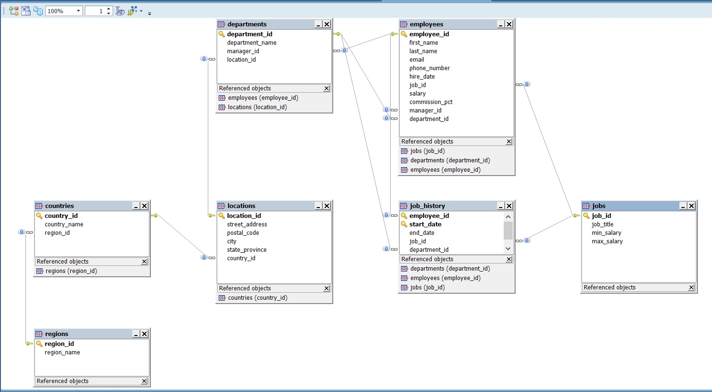

SQL is a special-purpose programming language designed for managing information in a relational database management system (RDBMS). In this post, I am going to describe few simple entities and demonstrate how SQL can be used to manage those.
What is a table ? The data or information in database is stored in these tables. Tables are uniquely identified by their names and are comprised of columns and rows. Columns contain the column name, data type, and any other attributes for the column. Rows contain the records or data for the columns. When we model real-world entities they get represented using Table.
To start with, let’s create a schema that is identical to HR schema published for Oracle. I have ported it into MSQL you can find all the necessary SQLs hr_schema.sql. The entities and the relationship among them are represented in the ER diagram below. I have auto generated that using Toad for MySQL application. 
What is a primary key ? A primary key is a field in a table which uniquely identifies each row/record. This puts forward the following restriction on employee_id in employees:
It cannot be NULL
It should be unique, i.e. you cannot repeat the same primary key value in a table.
What is a foreign key ? A foreign key is a field in a table that can only contain the value of a primary key in another table. This puts forward the following restrictions on department_id in employees:
It can be NULL
If it is not NULL, it must contain a value already available in department_id field in departments table.
SQL Joins
Joins are used to combine rows from multiple tables by specifying matching criteria. Usually, it is based on primary key-foreign key relations. For example, return rows that combine data from locations and departments tables by matching the locations.location_id primary key to the departments.location_id foreign key.
Before we begin let’s look at what is there in locations, departments and employees
There are various types of joins, I will go through each one in detail here.
Equi Join
Self Join
Natural Join
Inner Join
Outer Join – Left Outer Join – Right Outer Join – Full Outer Join
Cross Join
Equi Join
In pure SQL terminology any kind of JOIN you do with an equality operator (=) is an equi join. So an outer join, or inner join if is having an equality operator is an equi join, I will show examples of those later. Lets look at a plain vanilla equi join which lists the department and its manager.
If we join the same table then it is called a self-join. In this example, I will list the employees and their managers.
1
2
3
4
5
6
7
8
9
10
11
12
13
mysql> select concat(e.first_name, ' ', e.last_name) as employee , concat(m.first_name, ' ' , m.last_name) as manager
-> from employees e, employees m
-> where e.manager_id = m.employee_id limit 5;
+------------------+------------------+
| employee | manager |
+------------------+------------------+
| Neena Kochhar | Steven King |
| Lex De Haan | Steven King |
| Alexander Hunold | Lex De Haan |
| Bruce Ernst | Alexander Hunold |
| David Austin | Alexander Hunold |
+------------------+------------------+
5 rows in set (0.00 sec)
Natural Join
A natural join links all columns in two tables with the same name. It is a short cut notation, in which we are really performing equi join without explicitly mentioning the column name.
The implementation of natural join in MSQL do not allow you to specify the column name. So it will not yield right results when the matching column names signify slightly different data. Let us look back at equi join once again, to list managers of each department by combining departments and employees.
1
2
3
4
5
6
7
8
9
10
11
12
13
mysql> select d.department_name, concat(e.first_name, ' ', e.last_name) as manager
-> from departments d , employees e
-> where d.manager_id = e.employee_id limit 5;
+-----------------+-------------------+
| department_name | manager |
+-----------------+-------------------+
| Administration | Jennifer Whalen |
| Marketing | Michael Hartstein |
| Purchasing | Den Raphaely |
| Human Resources | Susan Mavris |
| Shipping | Adam Fripp |
+-----------------+-------------------+
5 rows in set (0.00 sec)
The same thing with NATURAL JOIN will not give use correct result, as manager_id column is there in both departments and employees table and NATURAL JOIN will pick the column name to join as manager_id.
1
2
3
4
5
6
7
8
9
10
11
12
13
mysql> select d.department_name, concat(e.first_name, ' ', e.last_name) as manager
-> from departments d NATURAL JOIN employees e limit 5;
+-----------------+----------------+
| department_name | manager |
+-----------------+----------------+
| Marketing | Pat Fay |
| Purchasing | Alexander Khoo |
| Purchasing | Shelli Baida |
| Purchasing | Sigal Tobias |
| Purchasing | Guy Himuro |
+-----------------+----------------+
5 rows in set (0.00 sec)
So my advice is never to use natural joins as its full syntax is not supported in MySQL and will give erratic results.
Inner Join
The inner join is the most common type of joins. An inner join is used to get the cross product between two tables, combining all records from both tables. To get the right result you can use an equi-join or one natural join (column names between tables must be the same). It is the default join also so you can omit the INNER keyword.
1
2
3
4
5
6
7
8
9
10
11
12
13
14
15
16
17
18
19
20
21
22
23
24
25
mysql> select d.department_name , concat(e.first_name, ' ' , e.last_name) as manager from departments d
-> INNER join employees e on d.manager_id = e.employee_id
-> limit 3;
+-----------------+-------------------+
| department_name | manager |
+-----------------+-------------------+
| Administration | Jennifer Whalen |
| Marketing | Michael Hartstein |
| Purchasing | Den Raphaely |
+-----------------+-------------------+
3 rows in set (0.00 sec)
-- a variation of the same query is
mysql> select d.department_name, concat(e.first_name, ' ' , e.last_name) as manager from departments d
-> JOIN employees e
-> where d.manager_id = e.employee_id
-> limit 3;
+-----------------+-------------------+
| department_name | manager |
+-----------------+-------------------+
| Administration | Jennifer Whalen |
| Marketing | Michael Hartstein |
| Purchasing | Den Raphaely |
+-----------------+-------------------+
3 rows in set (0.00 sec)
Left Outer Join
A left outer join will list all the entries form left side table of an equi join even if there is no match found. For example, in the list below I am displaying all the records from employees and if available the departments at which they work.
-> left join departments d on e.department_id = d.department_id
-> order by d.department_name asc
-> limit 3;
+------------+-----------+-----------------+
| first_name | last_name | department_name |
+------------+-----------+-----------------+
| Kimberely | Grant | NULL |
| William | Gietz | Accounting |
| Shelley | Higgins | Accounting |
+------------+-----------+-----------------+
3 rows in set (0.00 sec)
A right outer join will list all the entries form right side table of an equi join even if there is no match found. For example, in the list below I am displaying all the records from departments and if available the employees who work there.
-> right join departments d on d.department_id = e.department_id
-> order by d.department_name asc
-> limit 5;
+------------+-----------+-----------------+
| first_name | last_name | department_name |
+------------+-----------+-----------------+
| Shelley | Higgins | Accounting |
| William | Gietz | Accounting |
| Jennifer | Whalen | Administration |
| NULL | NULL | Benefits |
| NULL | NULL | Construction |
+------------+-----------+-----------------+
5 rows in set (0.00 sec)
Cross Join
Cross join will give cartesian product or cross product of the tables. An inner join without the equality condition is a cross join. The following sqls will give us cross product.
1
2
3
mysql> select d.department_name, concat(e.first_name, ' ' , e.last_name) as manager from departments d, employees e;
mysql> select d.department_name, concat(e.first_name, ' ' , e.last_name) as manager from departments d cross join employees e;
mysql> select d.department_name, concat(e.first_name, ' ' , e.last_name) as manager from departments d join employees e;